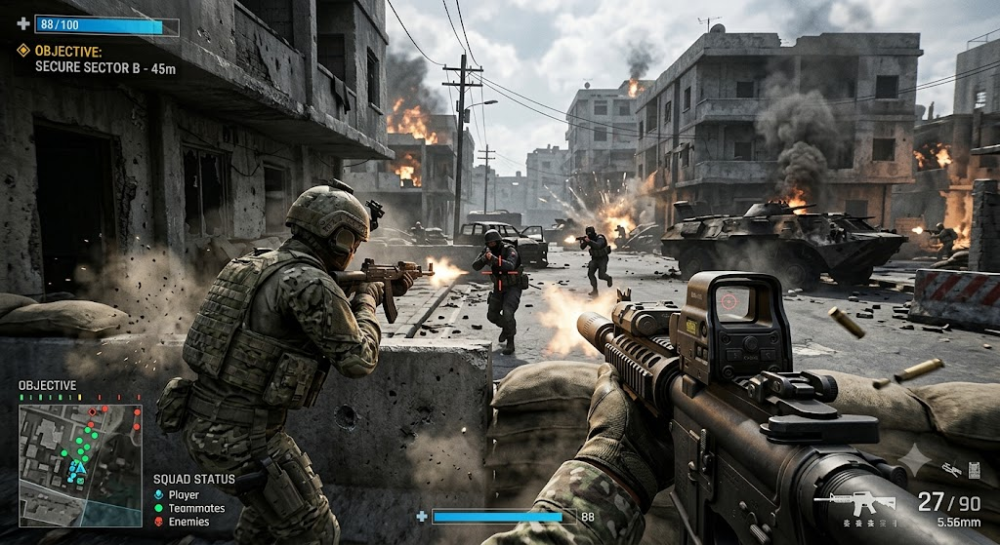
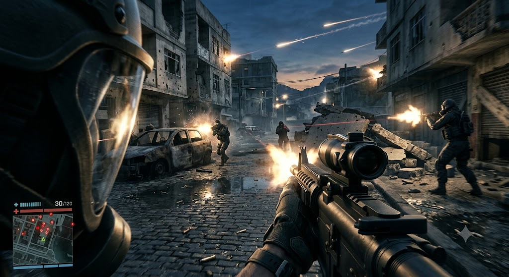
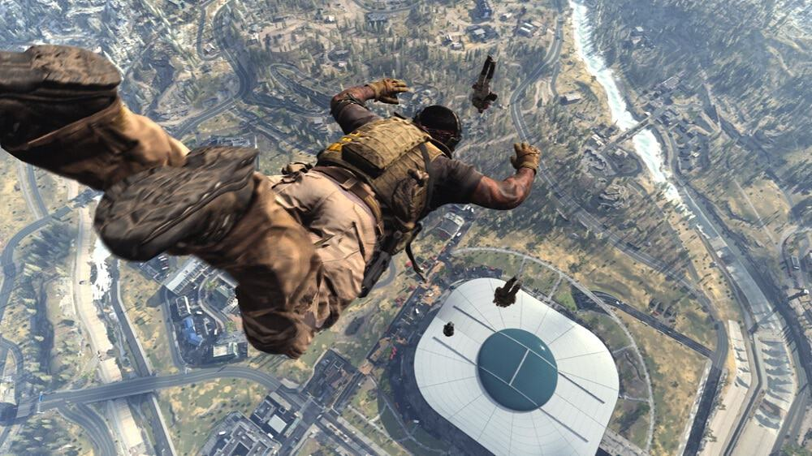
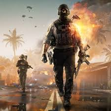

quem nunca jogou que atire a primeira prova

Jogos de tiro são videogames de ação que envolvem armas, combates e estratégias, podendo ser individuais ou em equipe. Eles exigem rapidez, precisão e atenção.

A GameFire é uma empresa especializada em jogos de tiro e ação. Nosso objetivo é criar experiências divertidas e emocionantes, com partidas competitivas, mapas variados e desafios para jogadores de diferentes níveis.

🔥 FireGame
FireGame é um jogo de ação e aventura com elementos de RPG, onde o jogador controla um personagem com poderes de fogo, enfrenta inimigos, completa missões e evolui suas habilidades.
Desenvolvimento Web: site, login, perfis e rankings.
Sistemas: personagens, missões, combate, níveis e recompensas.
Programação: movimentação, poderes, inimigos e fases.
Banco de Dados: jogadores, progresso, itens e pontuações.
Consultoria em Tecnologia: segurança, otimização e planejamento do projeto.
Slogan: “Domine o fogo. Enfrente o caos. Torne-se uma lenda.”

Email: contato@fire.clash.com.br
Telefone: (00) 99237809
Endereço: Rua dos Gamers, 150 – Centro, Pato Branco – PR, Brasil